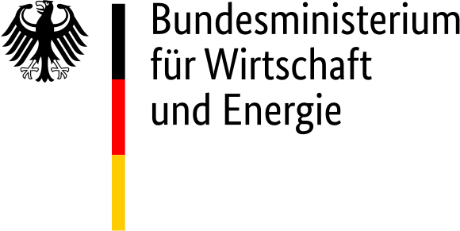

Simulation Based Optimization of the Time-Dependent Pulse Power for Laser Beam Welding of Aluminum Alloys in Order to Avoid Hot Cracks (OptiPuls)
Associated Publications
-
Simulationsbasierte Optimierung der zeitabhängigen Pulsleistung beim Laserstrahlschweißen von Aluminiumlegierungen zum Vermeiden von HeißrissenSchweißen und Schneiden 68(4), p.38-45, 2024
bibtex
@ARTICLE{SeiboldHildebrandStrelnikovBergmannSchrickerHerzog:2024:1, AUTHOR = {Seibold, Marc and Hildebrand, Jörg and Strelnikov, Dmytro and Bergmann, Jean Pierre and Schricker, Klaus and Herzog, Roland}, DATE = {2024}, DOI = {10.53192/SUS20240438}, JOURNALTITLE = {Schweißen und Schneiden}, NUMBER = {4}, PAGES = {38--45}, TITLE = {Simulationsbasierte Optimierung der zeitabhängigen Pulsleistung beim Laserstrahlschweißen von Aluminiumlegierungen zum Vermeiden von Heißrissen}, VOLUME = {68}, } -
An optimal control problem for single-spot pulsed laser weldingJournal of Mathematics in Industry 13(1), 2023
bibtex
@ARTICLE{HerzogStrelnikov:2023:1, AUTHOR = {Herzog, Roland and Strelnikov, Dmytro}, PUBLISHER = {Springer Science and Business Media LLC}, DATE = {2023-03}, DOI = {10.1186/s13362-023-00132-7}, EPRINT = {2109.10788}, EPRINTTYPE = {arXiv}, JOURNALTITLE = {Journal of Mathematics in Industry}, NUMBER = {1}, TITLE = {An optimal control problem for single-spot pulsed laser welding}, VOLUME = {13}, } -
Influence of solidification rate on hot crack behavior in heat conduction laser beam welding of EN AW-6082Procedia CIRP 111, p.490-495, 2022
bibtex
@ARTICLE{SeiboldStrelnikovSchrickerHerzogBergmann:2022:1, AUTHOR = {Seibold, Marc and Strelnikov, Dmytro and Schricker, Klaus and Herzog, Roland and Bergmann, Jean Pierre}, PUBLISHER = {Elsevier BV}, DATE = {2022}, DOI = {10.1016/j.procir.2022.08.076}, JOURNALTITLE = {Procedia CIRP}, PAGES = {490--495}, TITLE = {Influence of solidification rate on hot crack behavior in heat conduction laser beam welding of EN AW-6082}, VOLUME = {111}, } -
Prevention of solidification cracking during pulsed laser beam weldingProceedings in Applied Mathematics and Mechanics 17(1), p.405-406, 2017
bibtex
@ARTICLE{BergmannBieleninHerzogHildebrandRiedelSchrickerTrunkWorthmann:2017:1, AUTHOR = {Bergmann, Jean Pierre and Bielenin, Martin and Herzog, Roland A. and Hildebrand, Jörg and Riedel, Ilka and Schricker, Klaus and Trunk, Carsten and Worthmann, Karl}, PUBLISHER = {Wiley-Blackwell}, DATE = {2017-12}, DOI = {10.1002/pamm.201710172}, JOURNALTITLE = {Proceedings in Applied Mathematics and Mechanics}, NUMBER = {1}, PAGES = {405--406}, TITLE = {Prevention of solidification cracking during pulsed laser beam welding}, VOLUME = {17}, }
Associated Software
-
Numerical model for single spot pulsed laser beam welding,
2022
bibtex
@SOFTWARE{Strelnikov:2022:1, AUTHOR = {Strelnikov, Dmytro}, URL = {https://github.com/optipulsproject/python-optipuls/}, DATE = {2022}, TITLE = {Numerical model for single spot pulsed laser beam welding}, }
